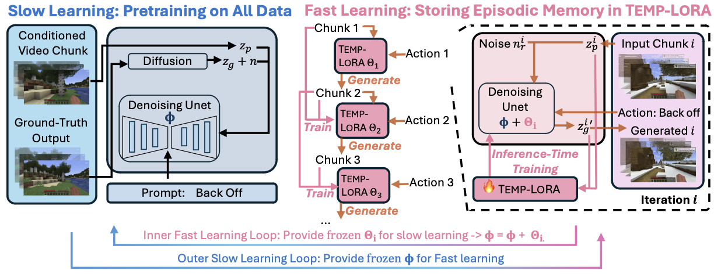
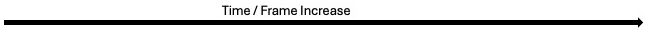
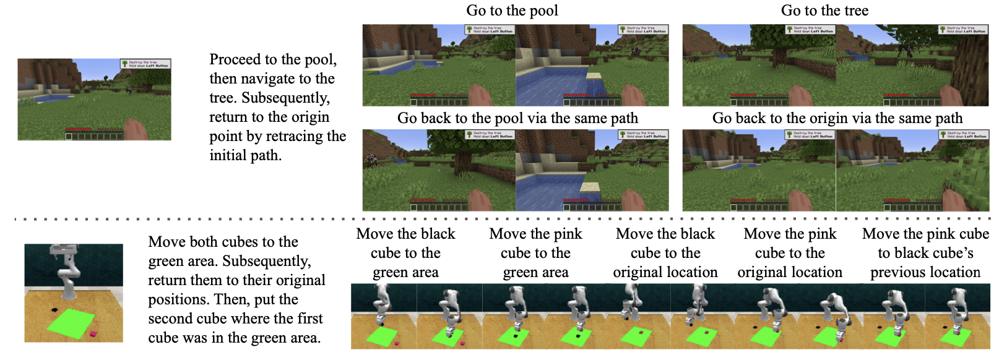

SlowFast-VGen
Slow-Fast Learning for Action-Conditioned Long Video Generation
1 UCLA
2 Microsoft Research
3 State University of New York at Buffalo
⧺ Equal Advising
Overview
We propose SlowFast-VGen, a dual-speed action-driven video generation system that mimics the complementary learning system in human brains. The slow learning phase (a), mimicking the neocortex, learns an approximate world model that simulates general dynamics across a diverse set of scenarios. The fast learning phase (b), similar to the hippocampus, stores episodic memory for consistent long video generation, e.g., generating the same scene for “Loc1” after traveling across different locations. Slow-fast learning also facilitates long-horizon planning tasks (c) that require the efficient storage of long-term episodic memories.
Slow-Fast Learning Framework
The left side illustrates the slow learning process, pretraining on all data with a masked conditional video diffusion model. The right side depicts the fast learning process, where TEMP-LORA stores episodic memory during inference. Stream- in actions guide the generation of video chunks, with TEMP-LORA parameters updated after each chunk. In our slow-fast learning loop algorithm, the inner loop performs fast learning, supplying TEMP-LORA parameters from multiple episodes to the slow learning process, which updates slow learning parameters Φ based on frozen fast learning parameters.
More Fast Learning Examples
More Slow Learning Examples
Slow-Fast Learning Loop for Memory-Augmented Long-Horizon Planning
Rethinking Slow-Fast Learning in Context of Complementary Learning Systems
Slow-Fast Learning Loop as a Computational Analogue to Hippocampus-Neocortex Interplay
In neuroscience, the neocortex is associated with slow learning, while the hippocampus facilitates fast learning and memory formation, thus forming a complementary learning system where the two learning mechanisms complement each other. While slow learning involves gradual knowledge acquisition, fast learning enables rapid formation of new memories from single experiences for quick adaptation to new situations through one-shot contextual learning. However, current pre-training paradigms (e.g., LLMs or diffusion models) primarily emulate slow learning, akin to procedural memory in cognitive science. In our setting, TEMP-LORA serves as an analogy to the hippocampus.
Temp-LoRA as Local Learning Rule
It's long believed that fast learning is achieved by local learning rule. Specifically, given pairs of patterns \((x^\mu, y^\mu)\) to be stored in the matrix \(C\), the process of storage could be formulated by the following equation:
Slow-Fast Learning Loop as a Computational Analogue to Hippocampus-Neocortex Interplay
The relationship between Temp-LoRA and slow learning weights mirrors the interplay between hippocampus and neocortex in complementary learning systems. This involves rapid encoding of new experiences by the hippocampus, followed by gradual integration into neocortical networks. As in memory consolidation, which is the process where hippocampal memories are abstracted and integrated into neocortical structures, forming general knowledge via offline phases, particularly during sleep. This bidirectional interaction allows for both quick adaptation and long-term retention. Our slow-fast learning loop emulates this process, where \( W' = W + \Delta W = W_{\text{slow}} + W_{\text{fast}} \). Here, \( W_{\text{fast}} \) (Temp-LoRA) rapidly adapts to new experiences, analogous to hippocampal encoding, while \( W_{\text{slow}} \) gradually incorporates this information, mirroring neocortical consolidation.
Citation
If you use this work or find it helpful, please consider citing: (bibtex)
@article{slowfastvgen,
author = {Hong, Yining and Liu, Beide and Wu, Maxine and Zhai, Yuanhao and Chang, Kai-Wei and Li, Lingjie and Lin, Kevin and Lin, Chung-Ching and Wang, Jianfeng and Yang, Zhengyuan and Wu, Yingnian and Wang, Lijuan},
title = {SlowFast-VGen: Slow-Fast Learning for Action-Conditioned Long Video Generation},
journal = {arXiv},
year = {2024},
}